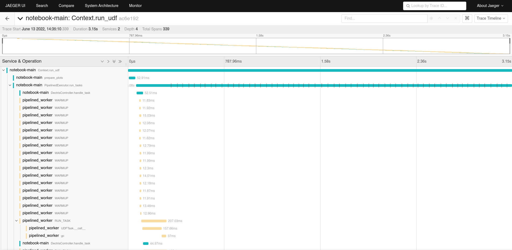

Debugging
There are different parts of LiberTEM which can be debugged with different tools and methods.
Debugging the Web GUI
For debugging the GUI, you can use all standard debugging tools for web development. Most useful in this context are the Chrome DevTools or Firefox Developer Tools, which can be accessed by pressing F12. You can extend these with additional panels for React and for Redux.
These tools can be used for inspecting all frontend-related processes, from network traffic
up to rendering behavior. Take note of the /api/events/ websocket connection, where all
asynchronous notification and results will be transferred.
Note that you should always debug using the development build of the GUI, using npm start,
as described in the contributing section. Otherwise the debugging
experience may be painful, for example worse error output from react, minified source and
minified component names, …
Debugging the API server
If the API server returns a server error (500), the detailed exception should be logged
in the output of libertem-server. You can also try
enabling the debug mode of tornado
(there is currently no command line flag for this, so you need to change
libertem.web.server accordingly.)
If an analysis based on the exception alone is inconclusive, you can try to reproduce the problem using the Python API and follow the instructions below.
Debugging UDFs or other Python code
If you are trying to write a UDF, or debug other Python parts of LiberTEM, you can
instruct LiberTEM to use simple single-threaded execution using the
InlineJobExecutor.
from libertem import api as lt
ctx = lt.Context.make_with('inline')
ctx.run_udf(dataset=dataset, udf=udf)
You can then use all usual debugging facilities, including pdb and the %pdb magic of ipython/Jupyter.
The libertem.executor.inline.InlineJobExecutor uses a single CPU core
by default. It can be switched to GPU processing to test CuPy-enabled UDFs by
calling libertem.common.backend.set_use_cuda() with the device ID to use.
libertem.common.backend.set_use_cpu(0) switches back to CPU processing.
from libertem import api as lt
from libertem.utils.devices import detect
from libertem.common.backend import set_use_cpu, set_use_cuda
ctx = lt.Context.make_with('inline')
d = detect()
if d['cudas'] and d['has_cupy']:
set_use_cuda(d['cudas'][0])
ctx.run_udf(dataset=dataset, udf=udf)
set_use_cpu(0)
If a problem is only reproducible using the default executor, you will have to follow the
debugging instructions of dask-distributed.
As the API server can’t use the synchronous InlineJobExecutor,
this is also the case when debugging problems that only occur in context of the API server.
Debugging failing test cases
When a test case fails, there are some options to find the root cause:
The --pdb command line switch of pytest can be used to automatically
drop you into a pdb prompt in the failing test case, where you will either land
on the failing assert statement, or the place in the code where an
exception was raised.
This does not help if the test case only fails in CI. Here, it may be easier to
use logging. Because we call pytest with the --log-level=DEBUG
parameter, the failing test case output will have a section containing the
captured logging output.
You can sprinkle the code with log.debug(…) calls that output the relevant variables. In some cases you may also leave the logging statements in the code even after the problem is fixed, depending on the overhead.
Tracing using opentelemetry
New in version 0.10.0: Tracing support using opentelemetry was added in version 0.10.0
Instead of sprinkling logging or print statements into your code, it is also possible to diagnose issues or gain insight into the runtime behavior of LiberTEM using opentelemetry tracing. This is also based on adding instrumentation to the code, but follows a more structured approach.
Using tracing, instead of relatively unstructured “log lines”, rich and structured information can be logged as traces, which are organized into spans. These traces can then be visualized, inspected, searched, … using different tools and databases, here for example using Jaeger:
This becomes more interesting once your code goes beyond a single thread or process, when it is important to see the temporal relation between different events and functions executing concurrently. Crucially, it is possible to gather traces in distributed systems, from different nodes.
For an overview of opentelemetry, please see the official opentelemetry documentation - here, we will document the practical setup and usage. For the Python API docs, please see the opentelemetry Python API docs.
Getting tracing running
Some external services are needed to gather traces. We include
docker-compose configuration for getting these up and running quickly
in the tracing directory. Please note that this configuration
by default opens some ports, so be careful, as this may circumvent your
device’s firewall!
To get these running, start docker-compose up in said directory. This will
pull in all required docker images and start the required services, until they
are stopped using Ctrl+C.
The Jaeger UI, as shown above, is then available on localhost:16686. An alternative UI, called Zipkin, is available on localhost:9411. Both of these should now be viewable by your browser. The actual trace collection API endpoint is started on port 4317, but is only used under the hood.
In your LiberTEM virtual environment, you need to install the tracing
extra, for example via pip install -e .[tracing].
The Python code then needs to be told to enable tracing, and how to connect to the trace collection API endpoint. The easiest way is to set environment variables, for example, in a notebook:
%env OTEL_ENABLE=1
%env OTEL_EXPORTER_OTLP_ENDPOINT=http://localhost:4317
from libertem.common.tracing import maybe_setup_tracing
maybe_setup_tracing(service_name="notebook-main")
Or, for intrumenting the libertem-server:
OTEL_ENABLE=1 OTEL_EXPORTER_OTLP_ENDPOINT=http://localhost:4317 libertem-server
The same works for bringing up libertem-worker processes:
OTEL_ENABLE=1 OTEL_EXPORTER_OTLP_ENDPOINT=http://localhost:4317 libertem-worker
Be sure to change the endpoint URL to whatever is the correct one from the perspective of the worker process in the distributed case.
Support for setting up tracing on workers is already integrated in the Dask and pipelined executors. The inline executor doesn’t need any additional setup for tracing to work.
For enabling tracing across multiple Python processes in other scenarios,
possibly on multiple nodes, set the environment variables for each of these
processes, and also call the
maybe_setup_tracing() function on each.
On Windows
The easiest way to get the tracing services up and running is using Windows Subsystem for Linux to install Linux and Docker. This allows to run the tracing services as described above. Alternatively, Docker Desktop for Windows could be an option.
Clients running natively on Windows can then connect to these services:
set OTEL_ENABLE=1
set OTEL_EXPORTER_OTLP_ENDPOINT=http://localhost:4317
libertem-server
Adding your own instrumentation
By default, a minimal set of functions is already annotated with tracing
information, to be able to understand how UDFs are executed across multiple
processes. Adding tracing instrumentation to your code is similar to setting
up logging using the logging module. At the top of your Python module,
you create and use a Tracer object like this:
import time
from opentelemetry import trace
tracer = trace.get_tracer(__name__)
def some_function():
with tracer.start_as_current_span("span-name"):
time.sleep(0.1) # do some real work here
some_function()
You can also add some more information to a span, for example events with attributes:
def some_function():
with tracer.start_as_current_span("span-name") as span:
for i in range(16):
time.sleep(0.1) # do some real work here
span.add_event(f"work item done", {
"item_id": i, # you can add attributes to events
})
some_function()
Attributes can also be added to spans themselves:
def some_function():
with tracer.start_as_current_span("span-name") as span:
time.sleep(0.1) # do some real work here
span.set_attributes({
"attribute-name": "attribute-value-here",
})
some_function()
Note that, while the tracing is quite lightweight, it is probably a good idea
to not add spans and events in the innermost loops of your processing, like
UDF.process_frame, but spans for per-partition operations
should be fine. In the future, metrics could also be collected to gain
further insight into the performance characteristics.
For more details, please also see the opentelemetry Python API docs.